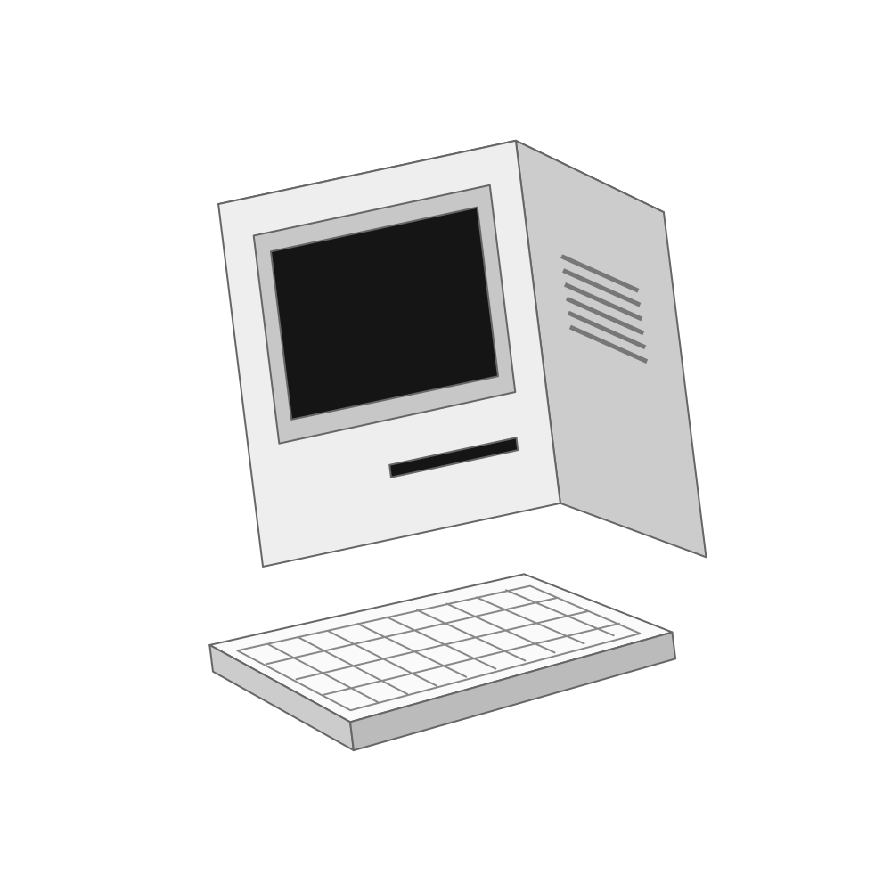

Same story, three different organising ideas. These are layout roughs. The line-drawn computer is a placement blockout, not a Higgsfield output. Exploration recorded before the final asset generation.

A youthful dev house with a shared love for software and design.
Fourways, South Africa / Est. 2023
Selected: human-first editorialThe object supports the story. Light and dark chapters create contrast; three thinking panels form a finite horizontal sequence.
NU LABS / DEV HOUSE
FOURWAYS, SOUTH AFRICA
FOUNDED 2023 / REMOTE TEAM
Alternative: a connected terminalA central machine and a distributed field of facts. Strong atmosphere, but more product-like and too dark for the broader site.
A new way to think.
Nu Labs / Mikey Nu (Pty) Ltd.
A youthful software and design team based in Fourways, working remotely.
Alternative: an editorial archiveA founding-year anchor and catalogue composition. Clear origins, but a timeline would need milestones the brief does not supply.